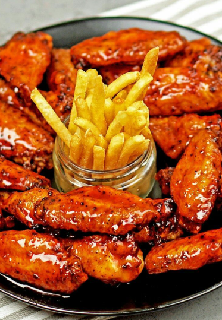

MI MOTIVACIÓN
Lo que más me motiva en la vida es mi familia, especialmente mi mamá y mis hermanos. Son mi mayor tesoro y la razón por la que cada día me esfuerzo por ser mejor. Mi mamá, con su amor y dedicación, me ha enseñado el valor del trabajo duro y la perseverancia. Mis hermanos son mi inspiración y mi mayor compañía, siempre apoyándonos mutuamente en cada desafío. Gracias a ellos, cada meta que alcanzo tiene un significado especial, porque todo lo que hago es también por y para ellos.
DATOS CURIOSOS
Me encanta cómo un buen maquillaje puede reflejar mi estado de ánimo: un look natural para los días tranquilos, algo más dramático cuando quiero destacar, y de vez en cuando, experimentar con estilos que nunca pensé probar. Para muchos, es solo un paso en la rutina, pero para mí, cada brochazo y cada detalle son una forma de creatividad y confianza.

Los ASMR tienen un efecto casi hipnótico en mí. Me relajan, me ayudan a concentrarme y, a veces, hasta me hacen dormir mejor. Puedo pasar minutos escuchando sonidos repetitivos sin darme cuenta del tiempo. Es curioso cómo algo tan simple puede generar tanta tranquilidad. No importa si son susurros, tapping o cualquier otro sonido, siempre encuentro uno que se vuelve mi favorito por un tiempo.

Me encanta hablar con las personas, aunque al principio suelo ser tímida. A veces me toma un momento soltarme, pero cuando lo hago, disfruto mucho las conversaciones. Me gusta escuchar historias, compartir ideas y aprender de los demás. Con el tiempo, he descubierto que incluso las charlas más simples pueden dejar algo valioso.
Los blogs de viaje me parecen interesantes porque muestran experiencias reales, descubren lugares únicos y capturan esos pequeños detalles que hacen especial cada destino. Me imagino recorriendo el mundo, explorando nuevas culturas y, quién sabe, tal vez algún día documentando mis propias aventuras.
MI RECETA FAVORITA
- 1 kg de alitas de pollo
- 1 taza de salsa BBQ
- 2 cucharadas de miel
- 1 cucharada de salsa de soja
- 1 cucharadita de ajo en polvo
- 1 cucharadita de paprika
- Sal y pimienta al gusto
- 2 cucharadas de mantequilla derretida
PREPARACIÓN
- Preparar las alitas: Lávalas y sécalas bien con papel absorbente.
- Sazonar: En un bowl, mezcla las alitas con sal, pimienta, ajo en polvo y paprika.
- Hornear o freír: Puedes hornearlas a 200°C por 30-40 minutos o freírlas hasta que estén doradas.
- Preparar la salsa: Mezcla la salsa BBQ, miel, salsa de soja y mantequilla derretida.
- Cubrir las alitas: Cuando estén listas, báñalas con la salsa BBQ y hornéalas 10 minutos más para que caramelicen.
- Servir y disfrutar: Acompáñalas con aderezo ranch o blue cheese y palitos de apio.